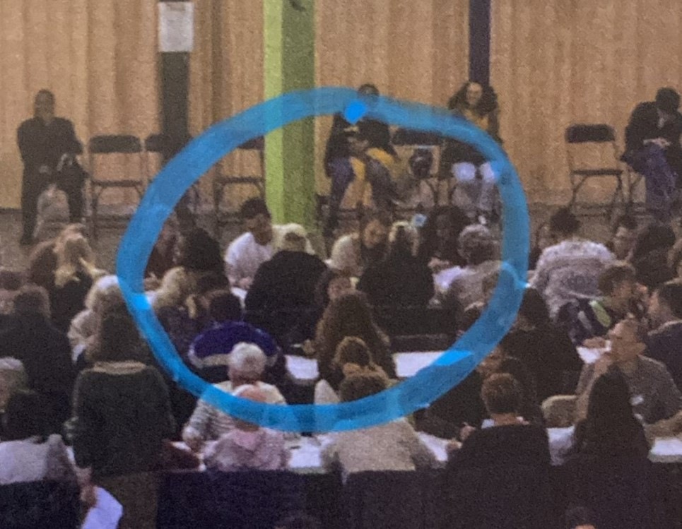

David Le-Hec
Maud-Hélène
"Mauthé-lène"
Exigeante, stricte, rigide, oui vous l’aurez compris on parle de Stalli-...
De Maud-Hélène ! exactement. Douce, aimante et soucieuse de ceux qu’elle aime. Elle sera toujours là pour vous écouter et parlez pendant des heures avec vous. Et si vous déménagez, elle sera d’une grande aide pour peindre et poncez vos murs ! Portez vos meubles ? Non... PONCEZ VOS MURS. Et en parlez pendant 3 semaines comme si elle était Valérie Damidot.
Détails
Née : Le 9 septembre 1989 à Paris.
Signe astro : Vierge (zodiaque) / Chèvre de métal (chinois)
Profession : Professeure des écoles.
Films préférés : Harry Potter, Orgueil et Préjugés.
Repas de la flemme favoris : Pâtes-Jambon-Mayo. Miam.
Weekend idéal : Les filles au Quartier Général gardées par nos Généraux. En route vers l’Ecosse avec Valentin, où une chambre dans le style typique d’une maison de campagne anglaise les attend. Spa, massage, piscine, dîner aux chandelles et petit-déjeuner à volonté... Le tout dans un 5 étoiles.
Partenaire: Lieutenant LE-HEC Valentin
Garde rapprochée : Emma, Lily.
Ses passions
La lecture : Fut un temps où elle adorait lire. Un temps qui peut paraître assez loin, mais une âme de lectrice le reste à jamais. Aujourd’hui, le rythme effréné de vie de famille l’empêche de se replonger dans des pages où elle se perdrait dans les méandres de son esprit. Alors les filles quand vous aurez l’âge de lire ça, c’est votre faute si maman ne pouvait plus lire ! Faut apprendre à jouer et à manger seul...
Quelque part c’est un mal pour un bien. Car lorsque vous regardez des films comme Harry Potter, Le Seigneur des Anneaux ou Orgueil et Préjugés avec Maudé, attendez-vous à l'entendre dire à tue-tête : “Non mais dans les livres c’est pas comme ça du tout oh la laaaaaaaaa” ou encore “Alors là normalement il est pas censé mourir”.
L’Histoire : Avec un grand “H”, elle en a même voulu faire son métier ! Prof d’Histoire, pas prof d’histoire géo, juste Histoire. Elle n’aimait pas ça la géographie mais bon elle n’avait pas le choix, on ne peut pas faire l’un sans l’autre.
Vous l’auriez imaginée prof d’histoire ? Les dents jaunes, l’haleine qui sent le café froid et une allure à coucher sous un pont ? C’est à ça qu’ils ressemblent non ? Mais pas elle, elle est raffinée, simple, et en plus elle n'aime pas le café, elle boit du thé, et le thé ça sent bon ! Comme elle !!
Et puis, elle aurait transmis des faits historiques avec une telle passion que vous auriez été subjugués par eux, autant que par son sourire.
1515 ? Un seul mot doit vous venir à l’esprit et sortir au tac au tac, si elle vous a bien endoctriné comme elle l’a fait avec moi.
Allez tous en cœur, 1515 ? MARIGNAN !
Pour le reste de l’Histoire je vous laisse à chercher, c’est pas un blog d’historien ici.
Le thé : Aux grands maux, les grands remèdes ! Que nenni ! Du thé miel citron fera l’affaire à en écouter MauThé-lène.
Elle vous invite à prendre le goûter chez elle ? La chaaaance ! Vous aurez le choix entre une multitude de tasses, de styles et de tailles différentes. Une petite tasse victorienne typiquement anglaise toute mignonne ou un bon gros mug de 75cl remplie à ras bord. Allez chez elle en hiver et vous aurez bu suffisamment de thé pour arrosez l’entièreté des jardins de Versailles.
Traits de personnalité
elle aime ses idées et les faire respecter.
parlez sans crainte, elle vous écoutera et vous consolera.
La seule qui sache garder des vêtements et objets intactes après tant d’années. On dit même qu'elle emportera ses Nike multicolores dans sa tombe.
Anecdotes
Ses rêves :
Partir vivre au Royaume-Uni, en Irlande ou au Canada. Bref, chez les Bri’ish quoi.
Que l’on continue de les voir aussi souvent malgré la distance (le thé ça monte à la tête).
Anecdote :
(Si si ! Regardez bien tout au fond la petite dame "blonde mais pas trop" avec la tête baissée). 
Citation favorite :
Non mais t’as vu comme elle est belle ta cuisine, c’est grâce à moi. Mon chef-d'œuvre.